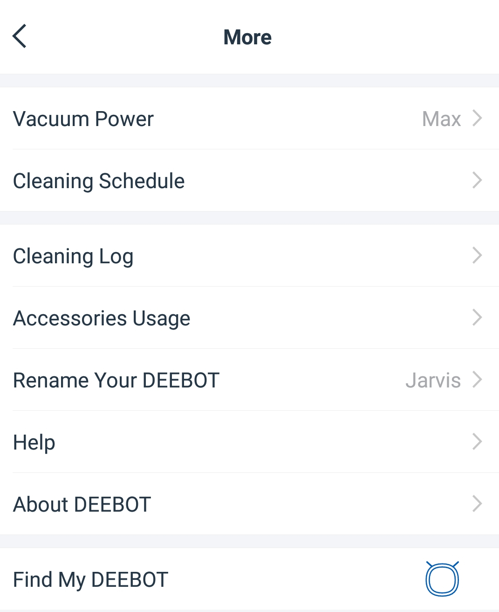
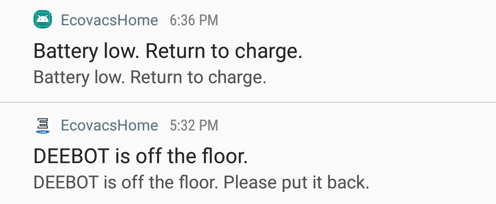
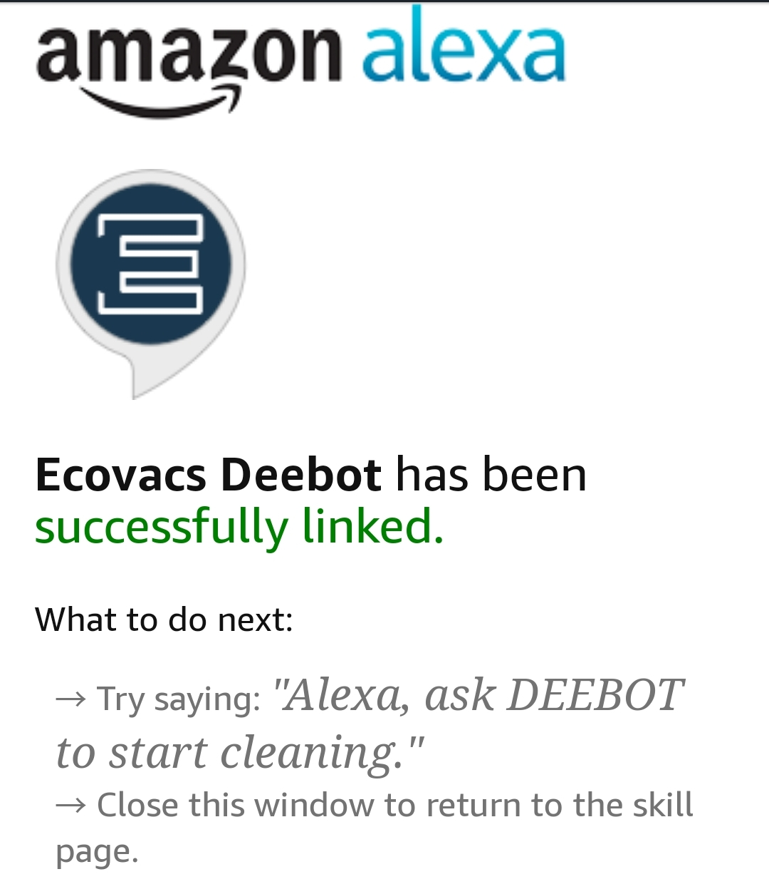

So I got the Deebot 500 a week ago, and I have to say this is pretty amazing. This unit allows you to set up a schedule time for cleaning. Take a moment to look at the app.

Apps: So this app allows you to set the Vacuum Power, Cleaning Schedule (Set days of the week and Time), view your logs, accessories usage (lets you see when you need to replace your debot accessories, such as brush), name your deebot and such.

Key Features: So this device is a little bigger than I had originally anticipated but should still be able to fit under most things such as couches. The robot is smart enough to return to its charging station if it's low on battery. It will tell you if anything happens to it. It features 1300pa suction and comes with two brushes in the front. For more information about what this unit comes with please watch this unboxing video.

Alexa: This device is capable of connecting with Alexa, all you need is to download the Ecovacs App and the Alexa App and set up the device on the Ecovacs app and then add it to your Alexa. In addition to saying "Ask DEEBOT" you can also say "Tell DEEBOT", and in addition to cleaning, you can also tell it to "Stop Cleaning" or "Return home".
Challenges: So my bedrooms are connected to the living room and the robot is unable to go over ledges, so it will not go to my bedroom if it's in the living room. Sometimes it will try to go in the room and get itself stuck so you would have to help it get unstuck.
Usage & Time: When I placed this in the bathroom, it was able to pick up some of the hairs that were on the floor(note that the floor is a bit wet). It was also able to go over the carpet that I had in the bathroom, so that's a good bonus. The time doesn't last that long for this device, the advertised time for the deebot is around 110 minutes. In my simulation, I was only able to get between 70-80 minutes of running time for it.
Overall: I feel like it's a good device and I didn't need to sweep my floor anymore after I had it, some of the things that I would like to have since it can't go over ledges are border restriction so it doesn't go over certain areas, it's nothing I can complain about since I got this for a really cheap price.
For occasional discount and items, please visit my store. To read more of my blog post, follow me on twitter, facebook, youtube, instagram & linkedin.